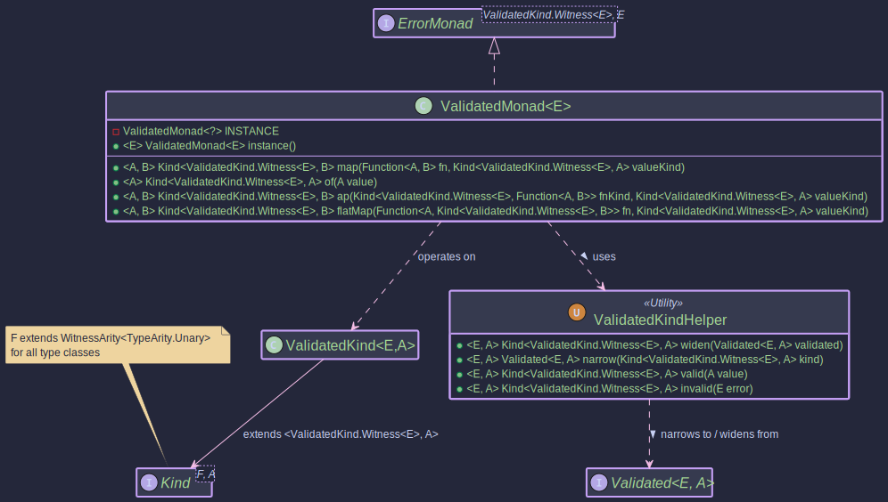

The ValidatedMonad:
Handling Valid or Invalid Operations
- How to distinguish between valid and invalid data with explicit types
- Using Validated as a MonadError for fail-fast error handling
- Understanding when to use monadic operations (fail-fast) vs applicative operations (error accumulation)
- The difference between fail-fast validation (Monad/MonadError) and error-accumulating validation (Applicative with Semigroup)
- Real-world input validation scenarios with detailed error reporting
Purpose
The Validated<E, A> type in Higher-Kinded-J represents a value that can either be Valid<A> (correct) or Invalid<E> (erroneous). It is commonly used in scenarios like input validation where you want to clearly distinguish between a successful result and an error. Unlike types like Either which are often used for general-purpose sum types, Validated is specifically focused on the valid/invalid dichotomy. Operations like map, flatMap, and ap are right-biased, meaning they operate on the Valid value and propagate Invalid values unchanged.
The ValidatedMonad<E> provides a monadic interface for Validated<E, A> (where the error type E is fixed for the monad instance), allowing for functional composition and integration with the Higher-Kinded-J framework. This facilitates chaining operations that can result in either a valid outcome or an error.
- Explicit Validation Outcome: The type signature
Validated<E, A>makes it clear that a computation can result in either a success (Valid<A>) or an error (Invalid<E>). - Functional Composition: Enables chaining of operations using
map,flatMap, andap. If an operation results in anInvalid, subsequent operations in the chain are typically short-circuited, propagating theInvalidstate. - HKT Integration:
ValidatedKind<E, A>(the HKT wrapper forValidated<E, A>) andValidatedMonad<E>allowValidatedto be used with generic functions and type classes that expectKind<F, A>,Functor<F>,Applicative<F>, orMonad<M>. - Clear Error Handling: Provides methods like
fold,ifValid,ifInvalidto handle bothValidandInvalidcases explicitly. - Standardized Error Handling: As a
MonadError<ValidatedKind.Witness<E>, E>, it offersraiseErrorto construct error states andhandleErrorWithfor recovery, integrating with generic error-handling combinators.
ValidatedMonad<E> implements MonadError<ValidatedKind.Witness<E>, E>, which transitively includes Monad<ValidatedKind.Witness<E>>, Applicative<ValidatedKind.Witness<E>>, and Functor<ValidatedKind.Witness<E>>.
Structure
Validated Type Conceptually, Validated<E, A> has two sub-types:
Valid<A>: Contains a valid value of typeA.Invalid<E>: Contains an error value of typeE.
Monadic Structure The ValidatedMonad<E> enables monadic operations on ValidatedKind.Witness<E>.

How to Use ValidatedMonad<E> and Validated<E, A>
Creating Instances
Validated<E, A> instances can be created directly using static factory methods on Validated. For HKT integration, ValidatedKindHelper and ValidatedMonad are used. ValidatedKind<E, A> is the HKT wrapper.
Direct Validated Creation & HKT Helpers: Refer to ValidatedMonadExample.java (Section 1) for runnable examples.
Creates a Valid instance holding a non-null value.
Validated<List<String>, String> validInstance = Validated.valid("Success!"); // Valid("Success!")
Creates an Invalid instance holding a non-null error.
Validated<List<String>, String> invalidInstance = Validated.invalid(Collections.singletonList("Error: Something went wrong.")); // Invalid([Error: Something went wrong.])
Converts a Validated<E, A> to Kind<ValidatedKind.Witness<E>, A> using VALIDATED.widen().
Kind<ValidatedKind.Witness<List<String>>, String> kindValid = VALIDATED.widen(Validated.valid("Wrapped"));
Converts a Kind<ValidatedKind.Witness<E>, A> back to Validated<E, A> using VALIDATED.narrow().
Validated<List<String>, String> narrowedValidated = VALIDATED.narrow(kindValid);
Convenience for widen(Validated.valid(value))using VALIDATED.valid().
Kind<ValidatedKind.Witness<List<String>>, Integer> kindValidInt = VALIDATED.valid(123);
Convenience for widen(Validated.invalid(error)) using VALIDATED.invalid().
Kind<ValidatedKind.Witness<List<String>>, Integer> kindInvalidInt = VALIDATED.invalid(Collections.singletonList("Bad number"));
ValidatedMonad<E> Instance Methods:
Refer to ValidatedMonadExample.java (Sections 1 & 6) for runnable examples.
Lifts a value into ValidatedKind.Witness<E>, creating a Valid(value). This is part of the Applicative interface.
ValidatedMonad<List<String>> validatedMonad = ValidatedMonad.instance();
Kind<ValidatedKind.Witness<List<String>>, String> kindFromMonadOf = validatedMonad.of("Monadic Valid"); // Valid("Monadic Valid")
System.out.println("From monad.of(): " + VALIDATED.narrow(kindFromMonadOf));
Lifts an error E into the ValidatedKind context, creating an Invalid(error). This is part of the MonadError interface.
ValidatedMonad<List<String>> validatedMonad = ValidatedMonad.instance();
List<String> errorPayload = Collections.singletonList("Raised error condition");
Kind<ValidatedKind.Witness<List<String>>, String> raisedError =
validatedMonad.raiseError(errorPayload); // Invalid(["Raised error condition"])
System.out.println("From monad.raiseError(): " + VALIDATED.narrow(raisedError));
Interacting with Validated<E, A> values
The Validated<E, A> interface itself provides useful methods: Refer to ValidatedMonadExample.java (Section 5) for runnable examples of fold, ifValid, ifInvalid.
isValid(): Returnstrueif it's aValid.isInvalid(): Returnstrueif it's anInvalid.get(): Returns the value ifValid, otherwise throwsNoSuchElementException. Use with caution.getError(): Returns the error ifInvalid, otherwise throwsNoSuchElementException. Use with caution.orElse(@NonNull A other): Returns the value ifValid, otherwise returnsother.orElseGet(@NonNull Supplier<? extends @NonNull A> otherSupplier): Returns the value ifValid, otherwise invokesotherSupplier.get().orElseThrow(@NonNull Supplier<? extends X> exceptionSupplier): Returns the value ifValid, otherwise throws the exception from the supplier.ifValid(@NonNull Consumer<? super A> consumer): Performs action ifValid.ifInvalid(@NonNull Consumer<? super E> consumer): Performs action ifInvalid.fold(@NonNull Function<? super E, ? extends T> invalidMapper, @NonNull Function<? super A, ? extends T> validMapper): Applies one of two functions depending on the state.Validatedalso has its ownmap,flatMap, andapmethods that operate directly onValidatedinstances.
Key Operations (via ValidatedMonad<E>)
These operations are performed on the HKT wrapper Kind<ValidatedKind.Witness<E>, A>. Refer to ValidatedMonadExample.java (Sections 2, 3, 4) for runnable examples of map, flatMap, and ap.
Applies f to the value inside kind if it's Valid. If kind is Invalid, or if f throws an exception (The behaviour depends on Validated.map internal error handling, typically an Invalid from Validated.map would be a new Invalid), the result is Invalid.
// From ValidatedMonadExample.java (Section 2)
ValidatedMonad<List<String>> validatedMonad = ValidatedMonad.instance();
Kind<ValidatedKind.Witness<List<String>>, Integer> validKindFromOf = validatedMonad.of(42);
Kind<ValidatedKind.Witness<List<String>>, Integer> invalidIntKind =
VALIDATED.invalid(Collections.singletonList("Initial error for map"));
Function<Integer, String> intToString = i -> "Value: " + i;
Kind<ValidatedKind.Witness<List<String>>, String> mappedValid =
validatedMonad.map(intToString, validKindFromOf); // Valid("Value: 42")
System.out.println("Map (Valid input): " + VALIDATED.narrow(mappedValid));
Kind<ValidatedKind.Witness<List<String>>, String> mappedInvalid =
validatedMonad.map(intToString, invalidIntKind); // Invalid(["Initial error for map"])
System.out.println("Map (Invalid input): " + VALIDATED.narrow(mappedInvalid));
If kind is Valid(a), applies f to a. f must return a Kind<ValidatedKind.Witness<E>, B>. If kind is Invalid, or f returns an Invalid Kind, the result is Invalid.
// From ValidatedMonadExample.java (Section 3)
ValidatedMonad<List<String>> validatedMonad = ValidatedMonad.instance();
Kind<ValidatedKind.Witness<List<String>>, Integer> positiveNumKind = validatedMonad.of(10);
Kind<ValidatedKind.Witness<List<String>>, Integer> nonPositiveNumKind = validatedMonad.of(-5);
Kind<ValidatedKind.Witness<List<String>>, Integer> invalidIntKind =
VALIDATED.invalid(Collections.singletonList("Initial error for flatMap"));
Function<Integer, Kind<ValidatedKind.Witness<List<String>>, String>> intToValidatedStringKind =
i -> {
if (i > 0) {
return VALIDATED.valid("Positive: " + i);
} else {
return VALIDATED.invalid(Collections.singletonList("Number not positive: " + i));
}
};
Kind<ValidatedKind.Witness<List<String>>, String> flatMappedToValid =
validatedMonad.flatMap(intToValidatedStringKind, positiveNumKind); // Valid("Positive: 10")
System.out.println("FlatMap (Valid to Valid): " + VALIDATED.narrow(flatMappedToValid));
Kind<ValidatedKind.Witness<List<String>>, String> flatMappedToInvalid =
validatedMonad.flatMap(intToValidatedStringKind, nonPositiveNumKind); // Invalid(["Number not positive: -5"])
System.out.println("FlatMap (Valid to Invalid): " + VALIDATED.narrow(flatMappedToInvalid));
Kind<ValidatedKind.Witness<List<String>>, String> flatMappedFromInvalid =
validatedMonad.flatMap(intToValidatedStringKind, invalidIntKind); // Invalid(["Initial error for flatMap"])
System.out.println("FlatMap (Invalid input): " + VALIDATED.narrow(flatMappedFromInvalid));
- If
ffisValid(f)andfaisValid(a), appliesftoa, resulting inValid(f(a)). - If either
fforfaisInvalid, the result isInvalid. Specifically, ifffisInvalid, its error is returned. - If
ffisValidbutfaisInvalid, thenfa's error is returned. If both areInvalid,ff's error takes precedence.
Note: This ap behaviour is right-biased and does not accumulate errors in the way some applicative validations might; it propagates the first encountered Invalid or the Invalid function.
// From ValidatedMonadExample.java (Section 4)
ValidatedMonad<List<String>> validatedMonad = ValidatedMonad.instance();
Kind<ValidatedKind.Witness<List<String>>, Function<Integer, String>> validFnKind =
VALIDATED.valid(i -> "Applied: " + (i * 2));
Kind<ValidatedKind.Witness<List<String>>, Function<Integer, String>> invalidFnKind =
VALIDATED.invalid(Collections.singletonList("Function is invalid"));
Kind<ValidatedKind.Witness<List<String>>, Integer> validValueForAp = validatedMonad.of(25);
Kind<ValidatedKind.Witness<List<String>>, Integer> invalidValueForAp =
VALIDATED.invalid(Collections.singletonList("Value is invalid"));
// Valid function, Valid value
Kind<ValidatedKind.Witness<List<String>>, String> apValidFnValidVal =
validatedMonad.ap(validFnKind, validValueForAp); // Valid("Applied: 50")
System.out.println("Ap (ValidFn, ValidVal): " + VALIDATED.narrow(apValidFnValidVal));
// Invalid function, Valid value
Kind<ValidatedKind.Witness<List<String>>, String> apInvalidFnValidVal =
validatedMonad.ap(invalidFnKind, validValueForAp); // Invalid(["Function is invalid"])
System.out.println("Ap (InvalidFn, ValidVal): " + VALIDATED.narrow(apInvalidFnValidVal));
// Valid function, Invalid value
Kind<ValidatedKind.Witness<List<String>>, String> apValidFnInvalidVal =
validatedMonad.ap(validFnKind, invalidValueForAp); // Invalid(["Value is invalid"])
System.out.println("Ap (ValidFn, InvalidVal): " + VALIDATED.narrow(apValidFnInvalidVal));
// Invalid function, Invalid value
Kind<ValidatedKind.Witness<List<String>>, String> apInvalidFnInvalidVal =
validatedMonad.ap(invalidFnKind, invalidValueForAp); // Invalid(["Function is invalid"])
System.out.println("Ap (InvalidFn, InvalidVal): " + VALIDATED.narrow(apInvalidFnInvalidVal));
MonadError Operations
As ValidatedMonad<E> implements MonadError<ValidatedKind.Witness<E>, E>, it provides standardised ways to create and handle errors. Refer to ValidatedMonadExample.java (Section 6) for detailed examples.
// From ValidatedMonadExample.java (Section 6)
ValidatedMonad<List<String>> validatedMonad = ValidatedMonad.instance();
List<String> initialError = Collections.singletonList("Initial Failure");
// 1. Create an Invalid Kind using raiseError
Kind<ValidatedKind.Witness<List<String>>, Integer> invalidKindRaised = // Renamed to avoid conflict
validatedMonad.raiseError(initialError);
System.out.println("Raised error: " + VALIDATED.narrow(invalidKindRaised)); // Invalid([Initial Failure])
// 2. Handle the error: recover to a Valid state
Function<List<String>, Kind<ValidatedKind.Witness<List<String>>, Integer>> recoverToValid =
errors -> {
System.out.println("MonadError: Recovery handler called with errors: " + errors);
return validatedMonad.of(0); // Recover with default value 0
};
Kind<ValidatedKind.Witness<List<String>>, Integer> recoveredValid =
validatedMonad.handleErrorWith(invalidKindRaised, recoverToValid);
System.out.println("Recovered to Valid: " + VALIDATED.narrow(recoveredValid)); // Valid(0)
// 3. Handle the error: transform to another Invalid state
Function<List<String>, Kind<ValidatedKind.Witness<List<String>>, Integer>> transformError =
errors -> validatedMonad.raiseError(Collections.singletonList("Transformed Error: " + errors.get(0)));
Kind<ValidatedKind.Witness<List<String>>, Integer> transformedInvalid =
validatedMonad.handleErrorWith(invalidKindRaised, transformError);
System.out.println("Transformed to Invalid: " + VALIDATED.narrow(transformedInvalid)); // Invalid([Transformed Error: Initial Failure])
// 4. Handle a Valid Kind: handler is not called
Kind<ValidatedKind.Witness<List<String>>, Integer> validKindOriginal = validatedMonad.of(100);
Kind<ValidatedKind.Witness<List<String>>, Integer> notHandled =
validatedMonad.handleErrorWith(validKindOriginal, recoverToValid); // Handler not called
System.out.println("Handling Valid (no change): " + VALIDATED.narrow(notHandled)); // Valid(100)
// 5. Using a default method like handleError
Kind<ValidatedKind.Witness<List<String>>, Integer> errorForHandle = validatedMonad.raiseError(Collections.singletonList("Error for handleError"));
Function<List<String>, Integer> plainValueRecoveryHandler = errors -> -1; // Returns plain value
Kind<ValidatedKind.Witness<List<String>>, Integer> recoveredWithHandle = validatedMonad.handleError(errorForHandle, plainValueRecoveryHandler);
System.out.println("Recovered with handleError: " + VALIDATED.narrow(recoveredWithHandle)); // Valid(-1)
The default recover and recoverWith methods from MonadError are also available.
This example demonstrates how ValidatedMonad along with Validated can be used to chain operations that might succeed or fail. With ValidatedMonad now implementing MonadError, operations like raiseError can be used for clearer error signaling, and handleErrorWith (or other MonadError methods) can be used for more robust recovery strategies within such validation flows.
- ValidatedMonadExample.java see "Combined Validation Scenario".
// Simplified from the ValidatedMonadExample.java
public void combinedValidationScenarioWithMonadError() {
ValidatedMonad<List<String>> validatedMonad = ValidatedMonad.instance();
Kind<ValidatedKind.Witness<List<String>>, String> userInput1 = validatedMonad.of("123");
Kind<ValidatedKind.Witness<List<String>>, String> userInput2 = validatedMonad.of("abc"); // This will lead to an Invalid
Function<String, Kind<ValidatedKind.Witness<List<String>>, Integer>> parseToIntKindMonadError =
(String s) -> {
try {
return validatedMonad.of(Integer.parseInt(s)); // Lifts to Valid
} catch (NumberFormatException e) {
// Using raiseError for semantic clarity
return validatedMonad.raiseError(
Collections.singletonList("'" + s + "' is not a number (via raiseError)."));
}
};
Kind<ValidatedKind.Witness<List<String>>, Integer> parsed1 =
validatedMonad.flatMap(parseToIntKindMonadError, userInput1);
Kind<ValidatedKind.Witness<List<String>>, Integer> parsed2 =
validatedMonad.flatMap(parseToIntKindMonadError, userInput2); // Will be Invalid
System.out.println("Parsed Input 1 (Combined): " + VALIDATED.narrow(parsed1)); // Valid(123)
System.out.println("Parsed Input 2 (Combined): " + VALIDATED.narrow(parsed2)); // Invalid(['abc' is not a number...])
// Example of recovering the parse of userInput2 using handleErrorWith
Kind<ValidatedKind.Witness<List<String>>, Integer> parsed2Recovered =
validatedMonad.handleErrorWith(
parsed2,
errors -> {
System.out.println("Combined scenario recovery: " + errors);
return validatedMonad.of(0); // Default to 0 if parsing failed
});
System.out.println(
"Parsed Input 2 (Recovered to 0): " + VALIDATED.narrow(parsed2Recovered)); // Valid(0)
}
This example demonstrates how ValidatedMonad along with Validated can be used to chain operations that might succeed or fail, propagating errors and allowing for clear handling of either outcome, further enhanced by MonadError capabilities.